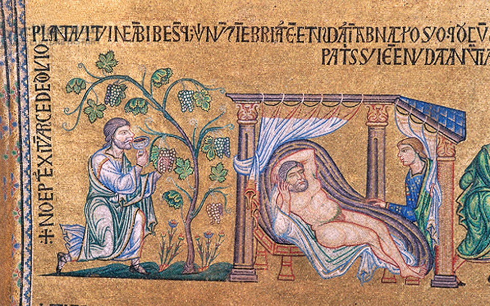
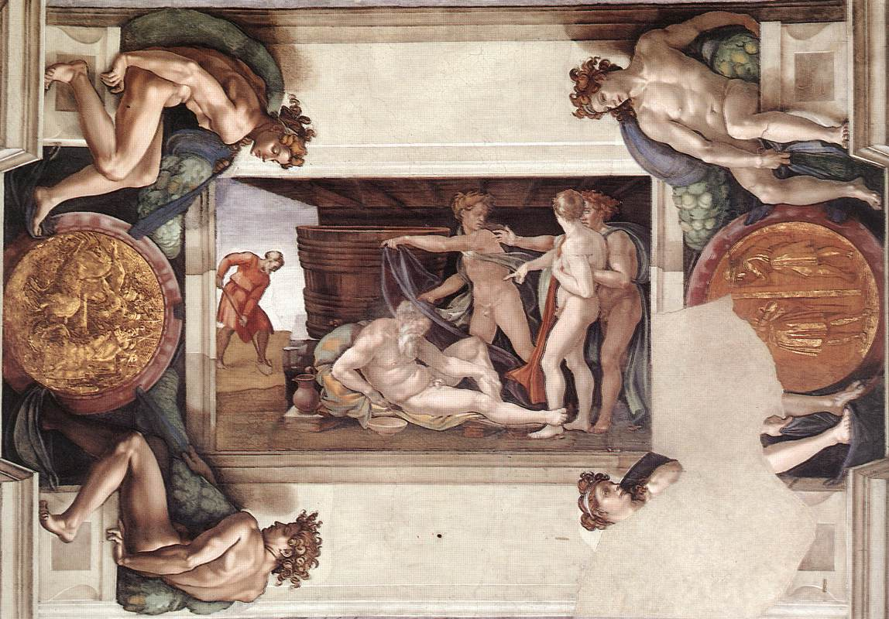
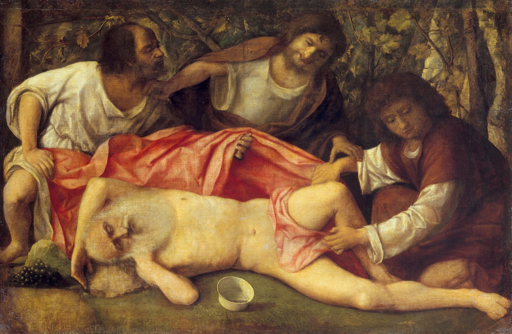
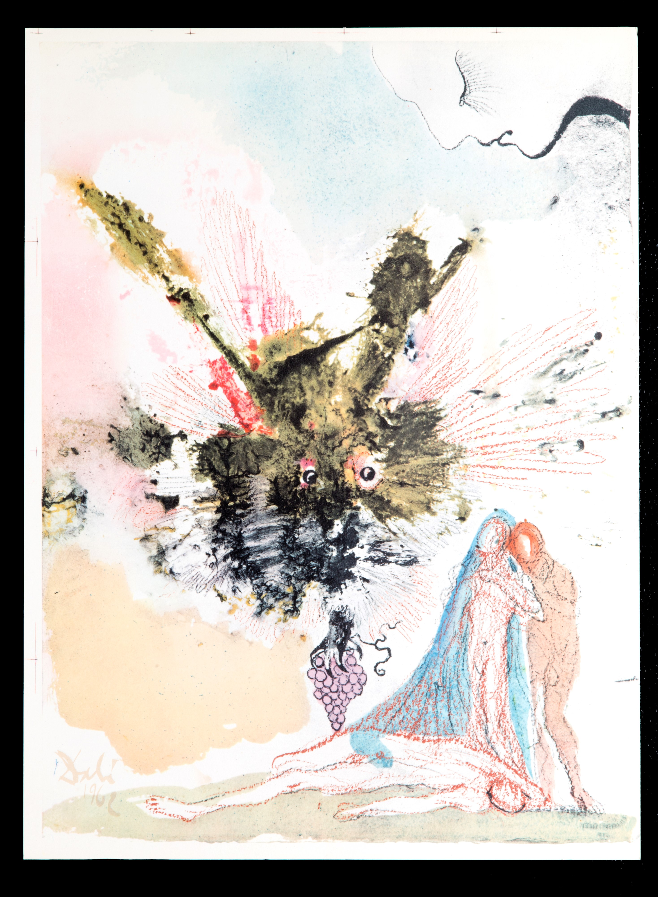

Genesis 9:20 is direct: after the flood, Noah planted a vineyard. The man who built an ark, gathered every species, and outlasted divine wrath — his first act in the new world was viticulture.
Then came the wine. Then came too much wine. Then came his sons finding him passed out and naked in his tent. Ham saw and mocked. Shem and Japheth walked in backwards, eyes averted, and covered their father without looking.
The first wine. The first excess. The first morning after.
It's an odd story to preserve. Noah saved humanity, and the next thing we learn about him is that he couldn't handle his drink. But maybe that's the point. The flood wiped the earth clean. What returned wasn't perfection — it was people. Flawed, fermenting, starting over.

a scene that haunted artists
Artists understood this. For nearly two thousand years, they kept returning to the scene — not the ark, not the rainbow, but the hangover.

In 12th-century Sicily, Byzantine mosaicists working for Norman kings rendered the scene in gold tesserae at Monreale Cathedral. The cycle shows Noah's full journey — from the ark to the vineyard to the tent. The images glow with the same solemnity reserved for Christ and the saints, yet here is the patriarch, undone by his own harvest.

A century later, the artisans of St. Mark's Basilica in Venice depicted the same moment — Noah among the vines, cup raised, his sons approaching with a cloth. The mosaics tell the story without judgment, simply presenting what happened: a man, a vine, and the consequences of both.

When Michelangelo painted the Sistine Chapel ceiling, he gave Noah an entire panel. In the background, clad in red, Noah tills the soil — the labor of planting. In the foreground, he sprawls naked, his sons reacting around him. Michelangelo placed this scene at the entrance of the chapel, the first narrative panel visitors would see. Some scholars suggest it was intentional: humanity's story begins not with triumph, but with frailty.

Giovanni Bellini, in his final years, painted what would become his only Old Testament scene. The composition is compressed into a low frieze: Noah asleep, wine cup nearby, grapes visible. His sons perform their choreographed response — Ham turning toward the viewer with a gesture that might be mockery or invitation, Shem and Japheth averting their eyes as they cover their father. For Bellini, the vineyard was no incidental setting; it signaled the Incarnation, Christ as the true vine. Even in failure, the image pointed beyond itself.

In Baroque Rome, Andrea Sacchi rendered the scene with theatrical drama — the patriarch sprawled upon rock, Ham gesturing outward as if breaking the fourth wall, the other brothers turned away. Sacchi painted multiple versions; the subject clearly compelled him. The tension between dignity and degradation, between the saved and the fallen, gave the composition its energy.

Even Dalí returned to Noah. In 1963, the surrealist began illustrating the Bible — 105 images commissioned by his friend Giuseppe Albaretto. Among them: Noah Who Planted The First Vineyard. In Dalí's vision, the patriarch dissolves into washes of color, the moment abstracted but unmistakable. The title itself makes the claim: this is the origin story. Before the regions, before the appellations, before the sommeliers — there was a man, a flood, and a vine.

why this story survives
Some stories survive because they're holy. Others survive because they're human.
Noah's drunkenness belongs to the second category. It offers no miracle, no divine intervention, no moral victory. Just a man who saved the world and then got drunk. The artists who returned to this scene, century after century, understood something essential: wine is not only sacrament. It is also risk. It reveals and it undoes. It is the thing Noah chose to make first — and the thing that brought him low.
What would you do after surviving a deluge?
Noah's answer endures in the vineyards we still tend, the wine we still pour, and the mornings after we still regret. The story lives because we recognize it. Because we've been there. Because wine, from the very beginning, has been both the blessing and the trouble.